Roda JC - Willem II (0-1) 9 december 2000
Roda JC - Willem II (0-1) 9 december 2000
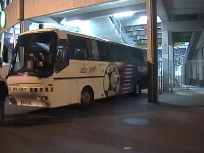
De spelersbus van Willem II
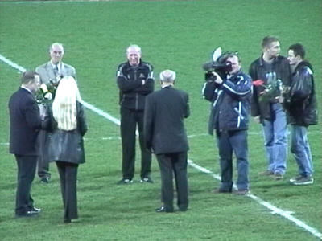
Hens Fischer en Norbert Keulen worden gehuldigd.
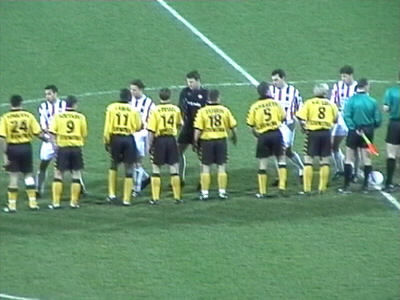
Een compleet Willem II trad aan tegen een gehandicapt Roda.
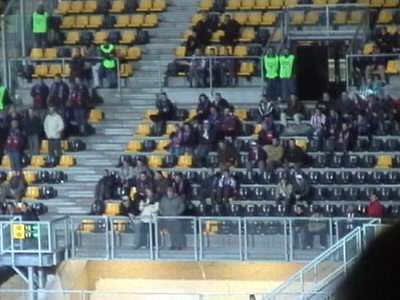
Er waren slechts 50 supporters uit Tilburg aanwezig.
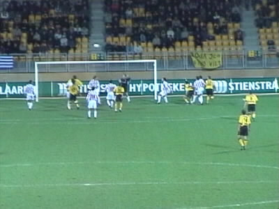
Roda kreeg in tegenstelling tot Willem II, legio kansen om te scoren.
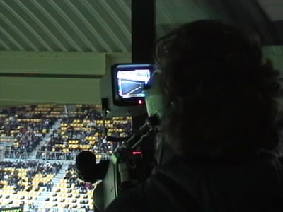
De cameraman van de NOB die de beelden maakt voor Studio Sport.
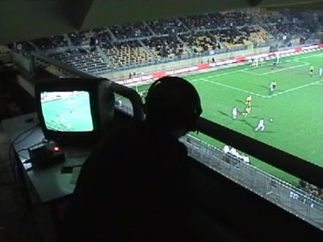
De commentator. Vanuit zijn adelaarsnest met gebruikmaking van schitterende technische hulpmiddelen velde de man
een hard vonnis over de wedstrijd. Slecht voetbal, rapportcijfer 4. De enige die er volgens hem bij Roda nog wat
van probeerde te maken was Tom Soetaers.
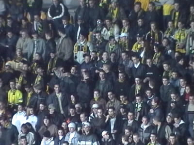
De supporters op west zijn verbeten op zoek naar een naam voor hun vak.
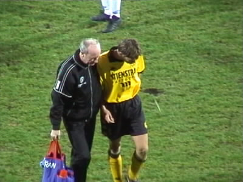
De geblesseerde Van Dessel lost een ferme fluim terwijl hij door Norbert afgevoerd wordt ter verzorging.
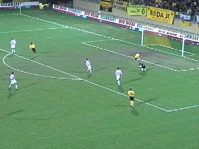
Spectaculaire sprong van (...) over doelman Van Fessum.
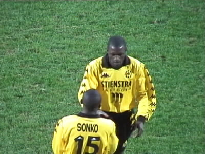
Lawal werd vervangen door Sonko.
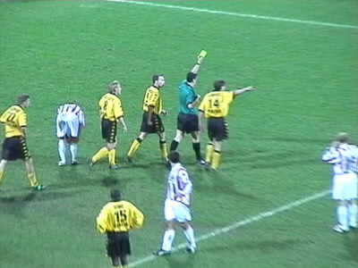
Terwijl Landzaat de bal op de stip legt krijgt Vrede de gele kaart.
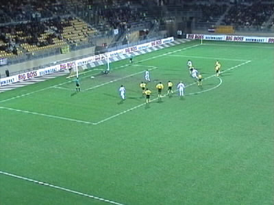
Kalac wordt naar de verkeerde hoek gestuurd waardoor Roda de wedstrijd in de 87e minuut verliest.
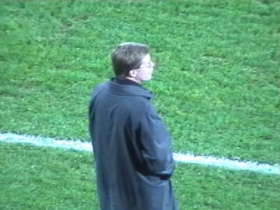
Westerhof weet dat hij vandaag 3 punten teveel kreeg.
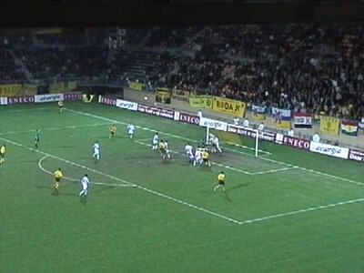
De zoveelste hoekschop van Roda. Ook deze levert niks op.
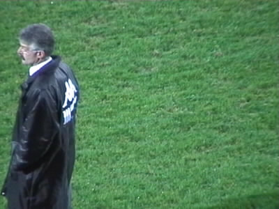
....
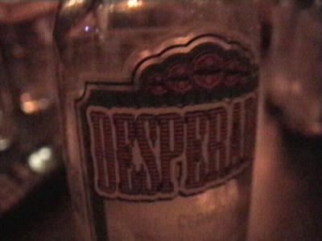
Na afloop werd er niet al te lang meer in de kille omloop gebleven. Het verdriet over de teloorgang van onze club
werd o.a. met Desperado's weggedronken in de Sjtomerij.
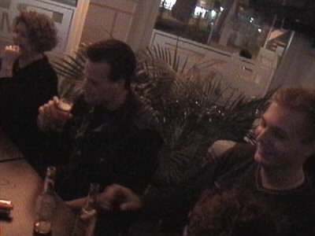
Hier gaat het alweer wat beter.
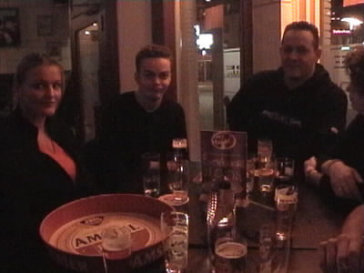
Hoewel bij Ruud de teleurstelling nog op het gezicht getekend staat.
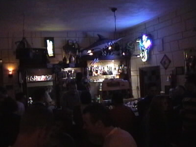
In de Sjtomerij welke de hoofdsponsor van het Fanprojekt is, vindt volgende week de feestavond plaats voor de leden
van het FP.
©KPD